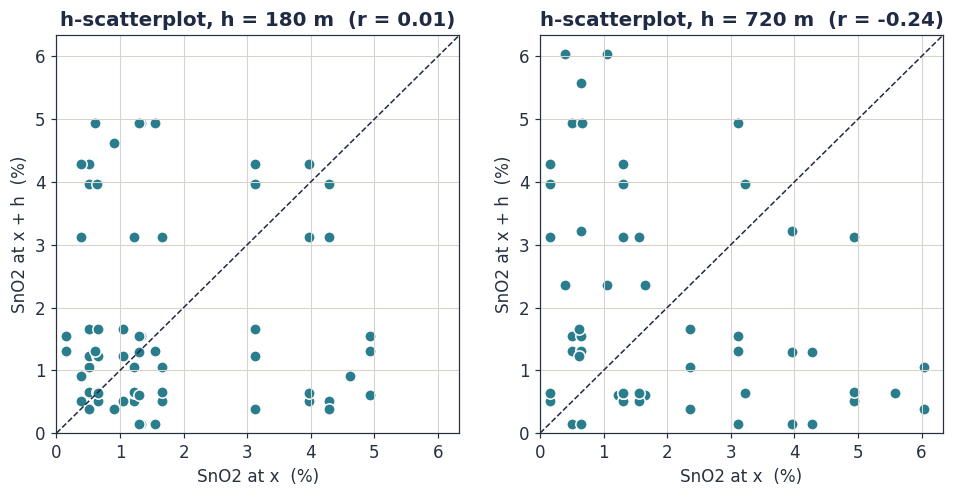
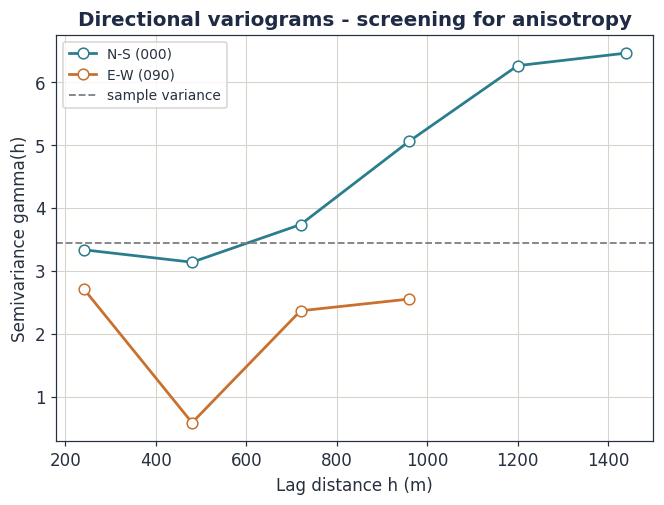
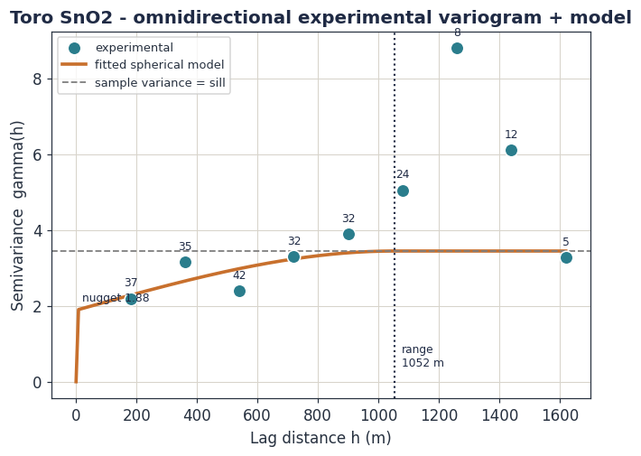

Spatial Continuity and Variography
This is the heart of geostatistics. Classical statistics treats samples as independent — but grade samples are not independent: two pits 50 m apart tell you more about each other than two pits 5 km apart. Variography is the mathematics that measures, models and exploits that spatial dependence. Every estimate in Module 5 is built on the variogram fitted here.
Learning objectives
- Explain the regionalised variable and why grade needs the random function model.
- State the second-order and intrinsic stationarity hypotheses and know which one geostatistics relies on.
- Define the covariance and the semivariogram and derive the relationship between them.
- Compute an experimental variogram with the Matheron estimator and read its nugget, sill and range.
- Fit a licit (positive-definite) variogram model and recognise anisotropy.
- Build and interpret the Toro SnO₂ variogram and judge what it can support.
4.1 The regionalised variable
Grade is a number attached to a location. Write it \(z(\mathbf{x})\): the grade observed at position vector \(\mathbf{x}\). Georges Matheron called such a quantity a regionalised variable — a variable distributed in space that carries two characters at once.
It has a structured character: grade reflects geology, and geology is continuous, so nearby values resemble one another. And it has a random, erratic character: grade fluctuates point to point in a way no deterministic equation can predict. A purely deterministic model cannot capture the erratic part; a purely random model throws away the structure. Geostatistics is the framework built to hold both at once.
4.2 The random function model
Here is the conceptual leap that makes everything else possible. We have exactly one grade value at each sampled point — one realisation of reality. To speak of probability, variance or confidence we must model that single reality as one outcome of a random function.
At every location \(\mathbf{x}\), treat the grade \(Z(\mathbf{x})\) as a random variable. The whole collection \(\{Z(\mathbf{x}):\mathbf{x}\in\text{domain}\}\) is a random function (or random field). The single map of grades we actually measured is regarded as one realisation of this random function — one draw from an imagined ensemble of all geologically possible deposits consistent with the same processes.
This is a modelling fiction, and a deliberate one. It is the price of admission to a quantified uncertainty: only by imagining the ensemble can we define the variance of an estimation error, and therefore attach the confidence statement that Module 1 insisted upon. The fiction is made workable by one disciplined assumption — stationarity.
4.3 Stationarity: making one realisation usable
We have one realisation but need ensemble averages. Stationarity is the bridge: it lets us replace an average over the imagined ensemble with an average over space in our single dataset. Geostatistics uses two graded versions of the assumption.
Second-order (weak) stationarity makes two demands. The mean is constant everywhere:
and the covariance between two locations depends only on the separation vector \(\mathbf{h}\) between them, not on where they sit:
Second-order stationarity requires a finite variance \(C(0)\). Some real geological variables behave as if their variance grows without limit as the domain expands, and for them no finite \(C(0)\) exists. So geostatistics leans on a weaker assumption.
The intrinsic hypothesis requires stationarity only of the increments \(Z(\mathbf{x}+\mathbf{h})-Z(\mathbf{x})\), not of \(Z\) itself. It asks that the increment has zero expected value and a variance that depends only on \(\mathbf{h}\):
\[ \mathbb{E}\!\big[Z(\mathbf{x}+\mathbf{h})-Z(\mathbf{x})\big]=0, \qquad \operatorname{Var}\!\big[Z(\mathbf{x}+\mathbf{h})-Z(\mathbf{x})\big] = 2\gamma(\mathbf{h}) \]This is weaker than second-order stationarity — every second-order stationary function is intrinsic, but not the reverse — and it is all that the variogram and ordinary kriging require. It is the working assumption of practical geostatistics.
4.4 The semivariogram and its link to covariance
The quantity \(\gamma(\mathbf{h})\) introduced above is the semivariogram — universally, if loosely, just called the variogram. It is the central tool of the discipline. By definition it is half the variance of the increment:
Because the expected increment is zero under the intrinsic hypothesis, the variance of the increment equals its mean square, giving the form we actually estimate:
When the stronger second-order stationarity does hold, the variogram and the covariance are two views of the same structure. The link is worth deriving in full, because it explains the shape of every variogram you will ever fit.
Expand the square in (4.4):
\[ 2\gamma(\mathbf{h})=\mathbb{E}\big[Z(\mathbf{x}+\mathbf{h})^2\big] +\mathbb{E}\big[Z(\mathbf{x})^2\big] -2\,\mathbb{E}\big[Z(\mathbf{x}+\mathbf{h})Z(\mathbf{x})\big] \]For any random variable, \(\mathbb{E}[Z^2]=\operatorname{Var}(Z) +(\mathbb{E}[Z])^2=C(0)+m^2\). And by the definition of covariance, \(\mathbb{E}[Z(\mathbf{x}+\mathbf{h})Z(\mathbf{x})] =C(\mathbf{h})+m^2\). Substituting all three terms:
\[ 2\gamma(\mathbf{h})=\big(C(0)+m^2\big)+\big(C(0)+m^2\big) -2\big(C(\mathbf{h})+m^2\big)=2C(0)-2C(\mathbf{h}) \]and therefore
\[ \boxed{\;\gamma(\mathbf{h})\;=\;C(0)-C(\mathbf{h})\;} \]Read that boxed result. At \(\mathbf{h}=0\), \(C(\mathbf{h})=C(0)\) so \(\gamma=0\): a value is identical to itself. As \(\mathbf{h}\) grows, covariance \(C(\mathbf{h})\) decays towards zero, so \(\gamma(\mathbf{h})\) rises towards \(C(0)\), the variance. The variogram is, in effect, the covariance turned upside down. It rises where covariance falls. This is why a variogram climbs from zero and flattens at the variance — and why the two parameters of that climb, how high and how far, are the entire spatial model.
4.5 The experimental variogram
Equation (4.4) is a theoretical expectation. From data we compute its estimate — the experimental variogram — with the Matheron estimator. For a chosen lag (separation) \(\mathbf{h}\), gather every pair of samples separated by approximately that vector, and average their squared differences:
Real samples are never separated by exactly \(\mathbf{h}\), so pairs are collected into lag bins defined by a lag spacing and a lag tolerance (commonly half the lag). Three practical rules govern a reliable experimental variogram:
- Each lag should carry enough pairs — a widely used minimum is about 30 pairs; below roughly 20 the point is noise.
- Interpret the variogram only out to about half the field extent; beyond that, pair counts collapse and the few remaining pairs sample only the edges of the deposit.
- The lag spacing should be near the typical data spacing — fine enough to resolve short-scale structure, coarse enough to keep pairs in each bin.
A useful companion plot is the h-scatterplot: a scatter of \(z(\mathbf{x})\) against \(z(\mathbf{x}+\mathbf{h})\) for every pair in a lag. At short lags the cloud hugs the 1:1 line (values alike); as the lag grows the cloud fattens into a shapeless blob (values decorrelated). The variogram is, quite literally, a summary of how fast that cloud disperses.

4.6 Anatomy of the variogram: nugget, sill, range
A typical variogram rises from near the origin and flattens. Three parameters describe it, and each carries a direct geological meaning.
The most diagnostic single number is the relative nugget effect, the nugget as a fraction of the sill:
If a variogram is flat from the first lag — nugget equal to sill, no rise — there is no spatial structure at the sampled scale. Samples are effectively independent. Kriging then collapses to the simple data mean, and the only honest conclusions are that the sampling is too coarse to see the structure, or that the deposit genuinely has none at this scale. The "Pure nugget" button in the tool below shows exactly this degenerate case.
4.7 Variogram models
The experimental variogram is known only at a handful of lags, and it is noisy. Kriging, in Module 5, needs \(\gamma(\mathbf{h})\) at every possible separation — and not just any function will do.
The kriging system inverts a matrix built from variogram values. For that system to have a unique solution and to never return a negative variance, the variogram function must be conditionally negative semi-definite (equivalently, its covariance must be positive definite). The raw experimental points have no such guarantee. So we fit one of a small library of functions known to satisfy the condition. These are the licit (or authorised) variogram models.
Four bounded and one unbounded model cover almost all practice. In each, \(C_0\) is the nugget, \(C\) the structured sill contribution and \(a\) the range.
Spherical — the workhorse
The spherical model reaches its sill exactly at the range \(a\) and is close to linear near the origin. It suits most disseminated and placer-style mineralisation, and it is the model used for the Toro estimate.
Exponential
Rises faster at first, then approaches the sill asymptotically — it never quite reaches it, so \(a\) is the practical range, where 95% of the sill is attained. It suits more erratic mineralisation.
Gaussian
Parabolic at the origin — flat then rising — which describes an extremely continuous, smoothly varying property such as a seam thickness or a weathering-surface elevation. Used with care: a Gaussian with no nugget can make the kriging matrix numerically unstable.
Power — the unbounded model
The power model has no sill and no range. It describes a variable that keeps decorrelating without limit — an intrinsic-only, non-second-order-stationary process. With \(\omega=1\) it is the linear model.
A sum of licit models is itself licit. Real deposits often need a nested variogram — a nugget plus a short-range structure (local mineralisation) plus a long-range structure (the regional geological trend). Each component is geologically interpretable, and the sum is still a valid model for kriging.
4.8 Anisotropy: continuity has direction
Grade continuity is rarely the same in every direction. A placer is more continuous along its palaeochannel than across it; a vein system is more continuous along strike than across it. The variogram is therefore computed directionally — pairs are binned not only by distance but by the azimuth of the vector joining them, within an angular tolerance.
When directional variograms share a sill but differ in range, the structure has geometric anisotropy, fully described by an anisotropy ellipse: a major axis along the direction of greatest continuity (longest range) and a minor axis across it. When the sill itself changes with direction, the structure has zonal anisotropy. The full picture is captured by a variogram map — \(\hat\gamma\) computed over a 2D grid of lag vectors — whose elliptical contours reveal both the strength and the orientation of the anisotropy at a glance.

4.9 The Toro variogram, built and fitted
Now the theory meets the data. The variogram is computed on the 26 composited Toro pit grades — composited, per Module 3, so that no location contributes a false zero-distance pair. A lag of 180 m was chosen to match the typical Bishiwai pit spacing.

The fit follows three defensible decisions, each one a direct application of section 4.5:
- Only the reliable lags drive the fit. The six lags with at least 20 pairs are used to fit the model; the three sparse outer lags are plotted but excluded. A model dragged upward by an 8-pair point would be a model of noise.
- The sill is fixed to the sample variance. Under the intrinsic hypothesis the sill of a bounded variogram equals the variance of the data (the boxed result of section 4.4). Fixing it removes one free parameter and stabilises a fit made from sparse, noisy data.
- An isotropic spherical model is adopted. Section 4.8 showed the directional data cannot resolve anisotropy, so isotropy is the honest choice.
Least-squares fitting of a spherical model to the reliable lags, weighted by pair count, yields:
| Parameter | Value | Interpretation |
|---|---|---|
| Nugget C₀ | 1.88 | unstructured noise — sampling error plus micro-variability |
| Sill C₀+C | 3.44 | total variance of the composited grades |
| Range a | 1052 m | distance of grade influence |
| Relative nugget | 0.55 | more than half the variance is unstructured |
The verdict is sobering and must be stated plainly. A relative nugget of 0.55 means over half of the grade variance has no spatial structure the data can resolve. Some of that is the genuine erratic nature of a coarse cassiterite placer; much of it, per Module 2, is the fundamental sampling error of panned-concentrate sampling. The structured range of about 1 km is encouraging — it suggests real drainage-scale continuity — but a high-nugget variogram is a quantitative warning: this data will estimate weakly, and the resource it supports cannot rise above an Exploration Target. Lowering that nugget is a sampling problem (Module 2), not an estimation problem.
import numpy as np
def experimental_variogram(x, y, z, lag, nlags, tol=None):
"""Matheron estimator - equation (4.5)."""
if tol is None:
tol = lag / 2.0
n = len(z)
dx = x[:, None] - x[None, :] # all pairwise separations
dy = y[:, None] - y[None, :]
h = np.sqrt(dx**2 + dy**2)
diff2 = (z[:, None] - z[None, :])**2 # all squared differences
iu = np.triu_indices(n, k=1) # each unordered pair once
h, diff2 = h[iu], diff2[iu]
out = []
for k in range(1, nlags + 1):
centre = k * lag
m = np.abs(h - centre) <= tol # pairs in this lag bin
if m.sum() >= 2:
out.append((centre, 0.5 * diff2[m].mean(), int(m.sum())))
return out
def spherical(h, nugget, sill, rng):
"""Licit spherical model - equation (4.7)."""
h = np.asarray(h, float)
g = np.where(h <= rng,
nugget + (sill - nugget) * (1.5*h/rng - 0.5*(h/rng)**3),
sill)
return np.where(h == 0, 0.0, g)
Use the tool above to feel what the parameters do. Drag the range and
watch where the model meets the sill. Drag the nugget and watch the model
lift off the origin. Press "Snap to least-squares fit" to land on the
Toro model — then press "Pure nugget" to see the degenerate case
where structure vanishes entirely and the variogram becomes a flat line.
The weighted RMSE in the readout is exactly the quantity the Python
curve_fit minimises.